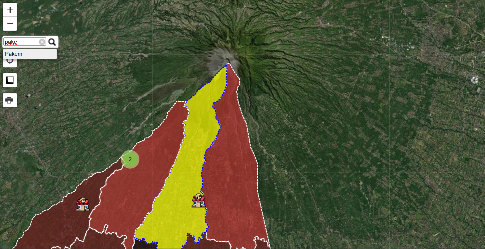

Fitur Website

Search Tool
Melakukan pencarian pada wilayah kecamatan yang ada di Kabupaten Sleman.
Geolocation
Memberikan informasi tentang lokasi terkini pengguna, disertai dengan keakuratan lokasinya.

Measurement Tool
Melakukan pengukuran luas dan keliling area dari bidang poligon yang dapat diatur.
Deskripsi Website
Latar Belakang
WEB GIS (Geographic Information System) adalah website berbasis Sistem Informasi Geografis yang diakses melalui web browser dan digunakan untuk memvisualisasikan, menganalisis, dan berbagi data geografis yang terkait dengan suatu wilayah atau lokasi tertentu.
WEB GIS yang dibuat dalam proyek kali ini menampilkan tema persebaran warmindo (warung makan indomie) yang terdapat pada Kabupaten Sleman, disertai dengan beberapa fitur dari WEB GIS seperti routing, measurement tool, geolocation, dan lain sebagainya.
Tujuan Pembuatan
Terdapat beberapa tujuan dalam penyusunan WEB GIS, yang di antaranya adalah :
- Sebagai proyek untuk memenuhi penugasan reponsi Mata Kuliah Pemrograman Geospasial: Website, Program Studi Sistem Informasi Geografis, Sekolah Vokasi, Universitas Gadjah Mada.
- Sebagai sarana sumber informasi untuk mengetahui persebaran titik warmindo yang ada pada Kabupaten Sleman.